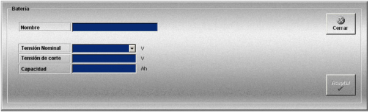

Baterías
La creación y edición de modelos de batería realiza mediante la siguiente ventana.

En esta ventana se definen los modelos de baterías que estarán disponibles para las unidades que intervienen en el simulador.
Para cada modelo de batería se definen los siguientes datos:
Nombre: Nombre del modelo.
Formato: caracteres alfanuméricos.
Tensión Nominal: Tensión nominal en voltios de la batería con que va equipada la unidad.
Unidades: voltios
Rango: Puede tomar los valores: 6, 12 y 24.
Tensión de corte: Tensión de corte de la batería.
Unidades: voltios
Rango: 0.00 - 24.00
Capacidad: Capacidad de la batería.
Unidades: amperios hora
Rango: 0.00 - 100.00